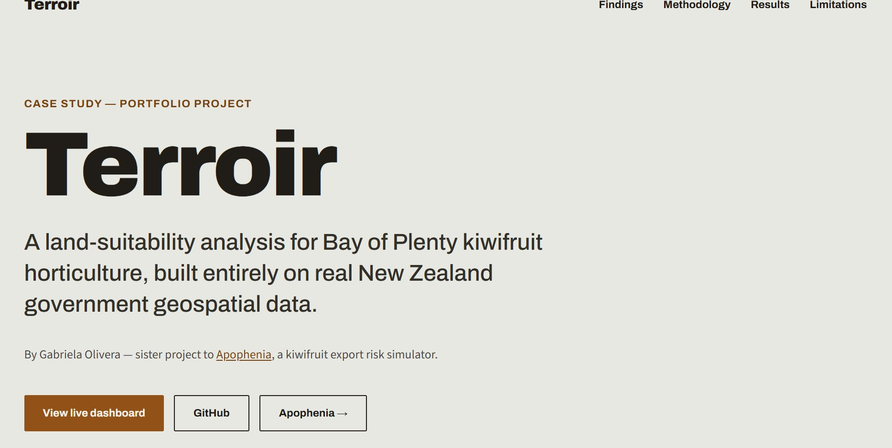

Where should kiwifruit grow in Bay of Plenty?
Geospatial land-suitability analysis
- 22,834Parcels analysed
- 21,491Scoredof 22,834 parcels
- 13,040Candidatesof 16,414 Excellent
I pulled four live sources — LINZ cadastral parcels, S-map soils, LCDB land cover and Open-Meteo climate — into a Python pipeline, joined them spatially, and scored every rural parcel in four districts for kiwifruit suitability.
The live dashboard runs on a free host and can take about 30 seconds to wake up on first visit — it isn't broken, just warming up. The case study loads instantly.